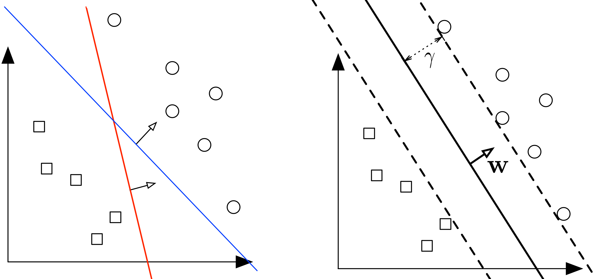
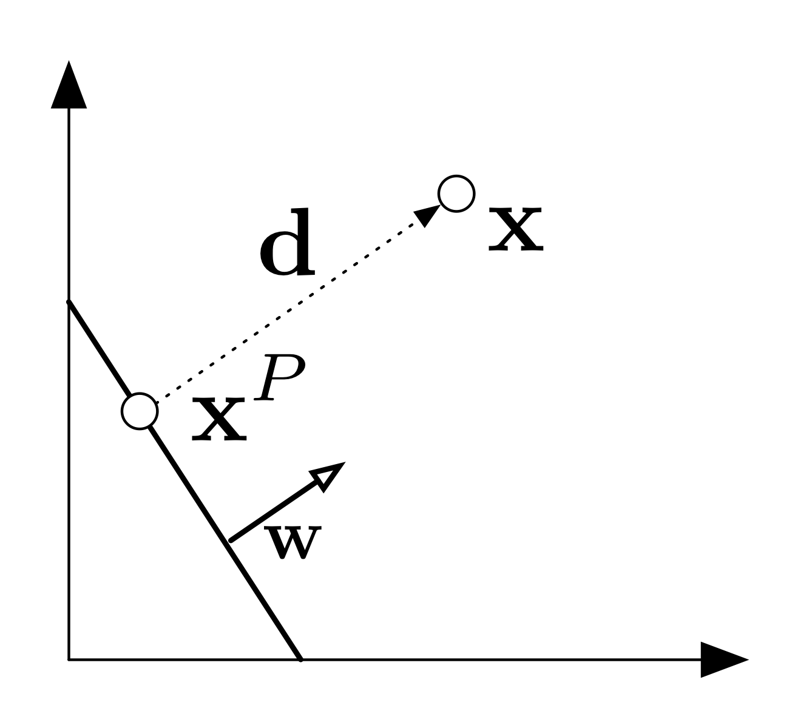
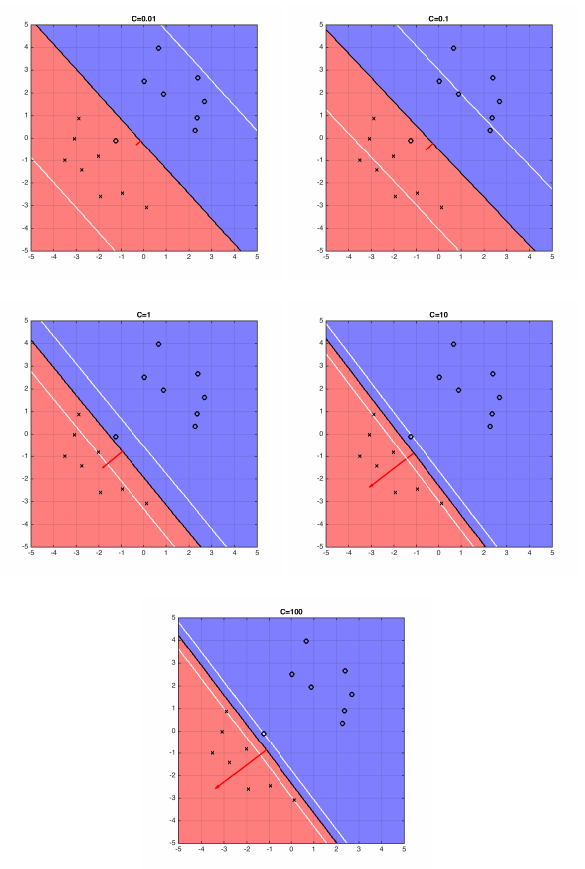

Typically, if a data set is linearly separable, there are infinitely many separating hyperplanes. A natural question to ask is: Question: What is the best separating hyperplane? SVM Answer: The one that maximizes the distance to the closest data points from both classes. We say it is the hyperplane with maximum margin. Figure 1: (Left:) Two different separating hyperplanes for the same data set. (Right:) The maximum margin hyperplane. The margin, $\gamma$, is the distance from the hyperplane (solid line) to the closest points in either class (which touch the parallel dotted lines).
We already saw the definition of a margin in the context of the Perceptron. A hyperplane is defined through $\mathbf{w},b$ as a set of points such that $\mathcal{H}=\left\{\mathbf{x}\vert{}\mathbf{w}^T\mathbf{x}+b=0\right\}$. Let the margin $\gamma$ be defined as the distance from the hyperplane to the closest point across both classes.
What is the distance of a point $\mathbf{x}$ to the hyperplane $\mathcal{H}$?
Consider some point $\mathbf{x}$. Let $\mathbf{d}$ be the vector from $\mathcal{H}$ to $\mathbf{x}$ of minimum length. Let $\mathbf{x}^P$ be the projection of $\mathbf{x}$ onto $\mathcal{H}$. It follows then that:
$\mathbf{x}^P=\mathbf{x}-\mathbf{d}$.
$\mathbf{d}$ is parallel to $\mathbf{w}$, so $\mathbf{d}=\alpha\mathbf{w}$ for some $\alpha\in\mathbb{R}$.
$\mathbf{x}^P\in\mathcal{H}$ which implies $\mathbf{w}^T\mathbf{x}^P+b=0$
therefore $\mathbf{w}^T\mathbf{x}^P+b=\mathbf{w}^T(\mathbf{x}-\mathbf{d})+b=\mathbf{w}^T(\mathbf{x}-\alpha\mathbf{w})+b=0$
which implies $\alpha=\frac{\mathbf{w}^T\mathbf{x}+b}{\mathbf{w}^T\mathbf{w}}$
The length of $\mathbf{d}$:
$\left \| \mathbf{d} \right \|_2=\sqrt{\mathbf{d}^T\mathbf{d}}=\sqrt{\alpha^2\mathbf{w}^T\mathbf{w}}=\frac{\left | \mathbf{w}^T\mathbf{x}+b \right |}{\sqrt{\mathbf{w}^T\mathbf{w}}}=\frac{\left | \mathbf{w}^T\mathbf{x}+b \right |}{\left \| \mathbf{w} \right \|_{2}}$
Margin of $\mathcal{H}$ with respect to $D$:
$\gamma(\mathbf{w},b)=\min_{\mathbf{x}\in D}\frac{\left | \mathbf{w}^T\mathbf{x}+b \right |}{\left \| \mathbf{w} \right \|_{2}}$
By definition, the margin and hyperplane are scale invariant: $\gamma(\beta\mathbf{w},\beta b)=\gamma(\mathbf{w},b), \forall \beta \neq 0$
Note that if the hyperplane is such that $\gamma$ is maximized, it must lie right in the middle of the two classes. In other words, $\gamma$ must be the distance to the closest point within both classes. (If not, you could move the hyperplane towards data points of the class that is further away and increase $\gamma$, which contradicts that $\gamma$ is maximized.)
These constraints are still hard to deal with, however luckily we can show that (for the optimal solution) they are equivalent to a much simpler formulation. (Makes sure you know how to prove that the two sets of constraints are equivalent.) $$ \begin{align} &\min_{\mathbf{w},b}\mathbf{w}^T\mathbf{w}&\\ &\textrm{s.t.} \ \ \ \forall i \ y_{i}(\mathbf{w}^T \mathbf{x}_{i}+b) \geq 1 & \end{align} $$
This new formulation is a quadratic optimization problem. The objective is quadratic and the constraints are all linear. We can be solve it efficiently with any QCQP (Quadratically Constrained Quadratic Program) solver. It has a unique solution whenever a separating hyper plane exists. It also has a nice interpretation: Find the simplest hyperplane (where simpler means smaller $\mathbf{w}^\top\mathbf{w}$) such that all inputs lie at least 1 unit away from the hyperplane on the correct side.
If the data is low dimensional it is often the case that there is no separating hyperplane between the two classes. In this case, there is no solution to the optimization problems stated above. We can fix this by allowing the constraints to be violated ever so slight with the introduction of slack variables: $$\begin{matrix} \min_{\mathbf{w},b}\mathbf{w}^T\mathbf{w}+C\sum_{i=1}^{n}\xi _{i} \\ s.t. \ \forall i \ y_{i}(\mathbf{w}^T\mathbf{x}_{i}+b)\geq 1-\xi_i \\ \forall i \ \xi_i \geq 0 \end{matrix}$$ The slack variable $\xi_i$ allows the input $\mathbf{x}_i$ to be closer to the hyperplane (or even be on the wrong side), but there is a penalty in the objective function for such "slack". If C is very large, the SVM becomes very strict and tries to get all points to be on the right side of the hyperplane. If C is very small, the SVM becomes very loose and may "sacrifice" some points to obtain a simpler (i.e. lower $\|\mathbf{w}\|_2^2$) solution.
 Figure 2: The five plots above show different boundary of hyperplane and the optimal hyperplane separating example data, when C=0.01, 0.1, 1, 10, 100.